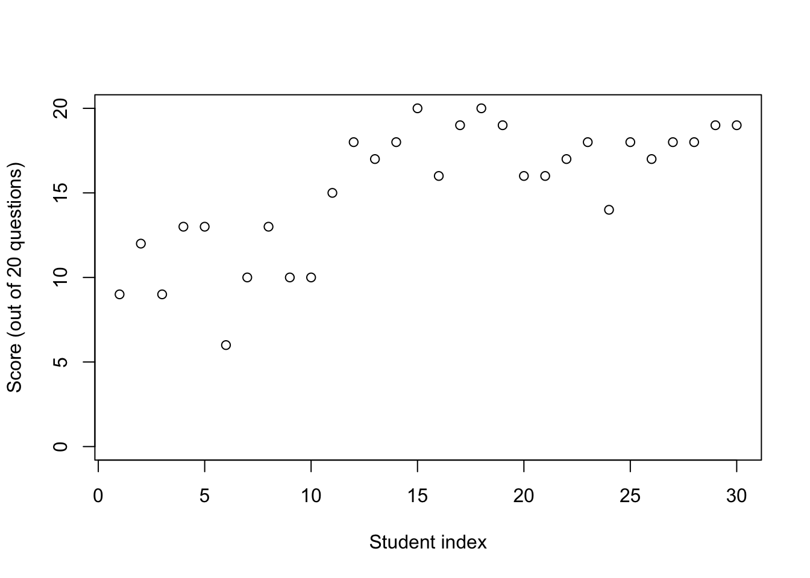
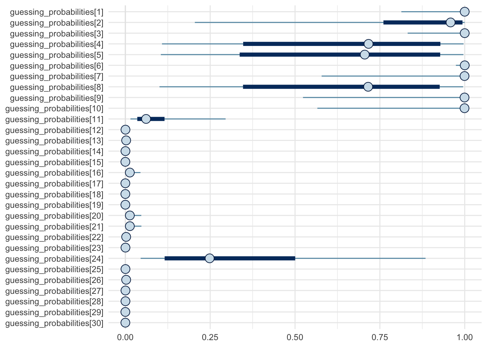

suppressPackageStartupMessages(require(rstan))
suppressPackageStartupMessages(require(ggplot2))
suppressPackageStartupMessages(require(dplyr))
suppressPackageStartupMessages(require(bayesplot))
data = read.csv(url("https://github.com/UBC-Stat-ML/web447/raw/main/data/ScoreData.csv"))
rmarkdown::paged_table(data)Mixtures
Outline
Topics
- Mathematical definition of mixtures
- Implementation in Stan
Rationale
Mixtures are motivated by cases where you believe the data is composed of two or more distinct sub-populations.
One use of mixtures is to figure out, for each data point, from which sub-population it comes from.
Beyond the sub-population example, mixtures are also used to get more flexible distribution families.
Example: detection of random guessing
- We look at a dataset from Albert and Hu, 2020.
- We have scores for 30 students on a test.
- The test has 20 questions.
- All questions are TRUE/FALSE with same weight.
- Every student attempted every question.
plot(data$Score,
ylim = c(0, 20),
xlab = "Student index",
ylab = "Score (out of 20 questions)")
- Notice a cluster of students with scores around 50%,
- and a second cluster with much better scores.
- Hypothesis: some students answered completely at random.
Simplified problem
- Suppose first that we have the score for only one student.
- E.g.: first one, who got 9/20.
- You want a model to put a probability on: “is this student is guessing at random?”
- Real application: analysis of clicker scores where grade is participation-based.
Mathematical model
- Start with the data: \(Y\), an integer between 0 and 20.
Question: what is a good choice of likelihood?
Click for hint
We can write \(Y = Y_1 + Y_2 + \dots + Y_{20}\), where \(Y_j\) is a Bernoulli for the score of question \(j\).
Click for choices
- Normal.
- Binomial.
- Discrete uniform.
- Continuous uniform.
- None of the above.
Click for answer
Since \(Y\) is a sum of Bernoullis, if we assume that the questions are independent, then this suggests a binomial likelihood family.
- The parameters of the likelihood depend on whether the student is guessing or not
- Let \(G\) denote an indicator on guessing, i.e.:
- \(G = 1\): guessing,
- \(G = 0\): not guessing, i.e., trying at the best of their ability.
- Let \(G\) denote an indicator on guessing, i.e.:
Question: what is a good choice of prior on \(G\)?
Click for choices
- \(\mathcal{N}(0, 1)\)
- \({\mathrm{Unif}}(0, 1)\)
- \({\mathrm{Bern}}(1/3)\)
- \({\mathrm{Exp}}(1/100)\)
- None of the above.
Click for answer
Since \(G\) can only take values \(0\) or \(1\), the prior has to be taken from the Bernoulli family.
We put \(1/3\) to model a prior belief that students guessing at random will be a minority.
- The likelihood given \(G = 1\) (guessing) is easy: \[Y \sim {\mathrm{Binom}}(20, 0.5).\]
- The likelihood given \(G = 0\) (trying at the best of their ability) is slightly trickier:
- what is “the best of their ability”?
- Bayesian recipe: treat it as an unknown ability parameters \(A\)
Full model:
\[\begin{align*} A &\sim {\mathrm{Unif}}(0, 1) \\ G &\sim {\mathrm{Bern}}(1/3) \\ Y &\sim {\mathrm{Binom}}(20, 0.5 G + A(1-G)). \end{align*}\]
Marginalization
- Stan does not support discrete latent random variables like \(G\)
- Therefore we use Rao-Blackwellization:
- Joint distribution before Rao-Blackwellization: \[\gamma(a, g, y) = p(a) p(g) p(y|a, g).\]
- Joint distribution after Rao-Blackwellization: \[\begin{align*} \gamma(a, y) &= \sum_{g=0}^1 \gamma(a, g, y) \\ &= \sum_{g=0}^1 p(a) p(g) p(y|a, g) \\ &= p(a) \sum_{g=0}^1 p(g) p(y|a, g) \\ &= \underbrace{p(a)}_\text{(a)} \underbrace{\left( \underbrace{p(g=1) p(y|a, g=1)}_\text{(b)} + \underbrace{p(g=0) p(y|a, g=0)}_\text{(c)} \right)}_\text{(d)}. \end{align*}\]
Question: match-up (a)-(d) with the labelled statements in the Stan code below.
Click for choices
(a) <-> ③, (b) <-> ②, (c) <-> ①, (d) <-> ⑤,(a) <-> ③, (b) <-> ①, (c) <-> ②, (d) <-> ⑤,(a) <-> ③, (b) <-> ②, (c) <-> ①, (d) <-> ④,(a) <-> ③, (b) <-> ①, (c) <-> ②, (d) <-> ④,- None of the above.
Click for answer
The matching:
(a) <-> ③, (b) <-> ①, (c) <-> ②, (d) <-> ④,is the correct answer.
data {
int<lower=0, upper=20> score;
}
parameters {
real<lower=0, upper=1> ability;
}
transformed parameters {
1 real complete_likelihood_guessing
= 1.0/3 * exp(binomial_lpmf(score | 20, 0.5));
2 real complete_likelihood_non_guessing
= 2.0/3 * exp(binomial_lpmf(score | 20, ability));
}
model {
3 ability ~ uniform(0, 1);
4 target +=
log(complete_likelihood_guessing + complete_likelihood_non_guessing);
}
generated quantities {
5 real guessing_probability =
complete_likelihood_guessing / (complete_likelihood_guessing + complete_likelihood_non_guessing);
}- 1
- Stan statement 1 (used in clicker question)
- 2
- Stan statement 2
- 3
- Stan statement 3
- 4
- Stan statement 4
- 5
- Stan statement 5
Re-instatiation
- We care about the posterior mean of \(G\), \(\mathbb{E}[G | Y = y]\)…
- …but we have marginalized \(G\) 🙁
- To compute the posterior mean, we first use the law of total expectation: \[\mathbb{E}[G | Y] = \mathbb{E}[{\color{red} \mathbb{E}[G | A, Y]} | Y],\]
- Let us look at the part in red, and see how we can compute it at every MCMC iteration based on the current value of \(A^{(m)}\)…
- Using the fact the mean of a Bernoulli is the probability that it takes value 1: \[\mathbb{E}[G | A, Y] = \mathbb{P}(G = 1 | A, Y).\]
- By Bayes rule (noting that a conditional probability like \(\mathbb{P}(\cdot | A)\) is a probability): \[\mathbb{P}(G = 1 | A, Y = y) = \frac{\mathbb{P}(G = 1, Y = y | A)}{\mathbb{P}(G = 0, Y = y | A) + \mathbb{P}(G = 1, Y = y | A)}.\]
- This is what gets computed in statement ⑤ in the above Stan code.
- Now, recall from the LLN for Markov chains gives us condition so that for a test function \(h\), we have that the Monte Carlo samples, \(A^{(1)}, A^{(2)}, \dots, A^{(M)}\) satisfy, \[\frac{1}{M} \sum_{m=1}^M h(A^{(m)}) \to \mathbb{E}[h(A) | Y = y],\] with probability one.
- Therefore from taking \(h(A^{(m)}) = \mathbb{P}(G = 1 | A^{(m)}, Y = y)\), we obtain, \[\frac{1}{M} \sum_{m=1}^M \mathbb{P}(G = 1 | A^{(m)}, Y = y) \to \mathbb{E}[G | Y = y],\] with probability one.
Testing the model
Probably guessing: feeding a score of 9 out of 20, we get:
fit = sampling(
students_guessing_simplified,
seed = 1,
refresh = 0,
data = list(score = 9)
)
mean(extract(fit)$guessing_probability)[1] 0.613919Probably not guessing: feeding a score of 19 out of 20, we get:
fit = sampling(
students_guessing_simplified,
seed = 1,
refresh = 0,
data = list(score = 19)
)
mean(extract(fit)$guessing_probability)[1] 9.302208e-05What is the key limitation of this approach?
Click for answer
The student could have a low score because the questions were too difficult!
With some assumptions (unimodality of the students abilities) we can avoid this limitation.
Full model: getting rid of key limitation
- Idea: use a hierarchical model!
- Random variables that are student-specific:
- \(Y_i \sim {\mathrm{Binom}}(20, 0.5 G_i + A_i (1 - G_i)).\)
- \(A_i \sim {\mathrm{Beta}}(\mu, S)\)
- \(G_i \sim {\mathrm{Bern}}(F)\)
- Random variables that are global:
- Population fraction that are guessing: \(F \sim {\mathrm{Unif}}(0, 1)\),
- Population parameters for the abilities:
- \(\mu \sim {\mathrm{Unif}}(0, 1)\)
- \(S \sim {\mathrm{Exp}}(1/100)\).
- Stan implementation:
data {
int n_students;
array[n_students] int<lower=0, upper=20> scores;
}
parameters {
real<lower=0, upper=1> fraction_guessing;
real<lower=0, upper=1> non_guessing_population_mean;
real<lower=0> non_guessing_population_spread;
vector<lower=0, upper=1>[n_students] abilities;
}
transformed parameters {
vector[n_students] complete_loglikelihood_guessing;
vector[n_students] complete_loglikelihood_non_guessing;
for (i in 1:n_students) {
complete_loglikelihood_guessing[i]
= log(fraction_guessing) + binomial_lpmf(scores[i] | 20, 0.5);
complete_loglikelihood_non_guessing[i]
= log1p(-fraction_guessing) + binomial_lpmf(scores[i] | 20, abilities[i]);
}
}
model {
fraction_guessing ~ uniform(0, 1);
non_guessing_population_mean ~ uniform(0, 1);
non_guessing_population_spread ~ exponential(1.0/100);
for (i in 1:n_students) {
abilities[i] ~ beta_proportion(non_guessing_population_mean, non_guessing_population_spread);
target +=
log_sum_exp(complete_loglikelihood_guessing[i], complete_loglikelihood_non_guessing[i]);
}
}
generated quantities {
vector[n_students] guessing_probabilities = inv_logit(complete_loglikelihood_guessing - complete_loglikelihood_non_guessing);
real predictive_score_non_guessing = 20 * beta_proportion_rng(non_guessing_population_mean, non_guessing_population_spread);
}fit = sampling(
students_guessing,
seed = 1,
refresh = 0,
data = list(
n_students = length(data$Score),
scores = data$Score
)
)Credible intervals and posterior medians: 90% (thick lines) and 50% (thin lines)
mcmc_intervals(fit, regex_pars = c("guessing_probabilities.*")) +
theme_minimal() +
scale_x_continuous(limits = c(0, 1)) 
Predictive score distribution: for the non guessing sub-population…
mcmc_areas_ridges(fit, regex_pars = c("predictive_score_non_guessing*")) +
theme_minimal() +
scale_x_continuous(limits = c(0, 20))